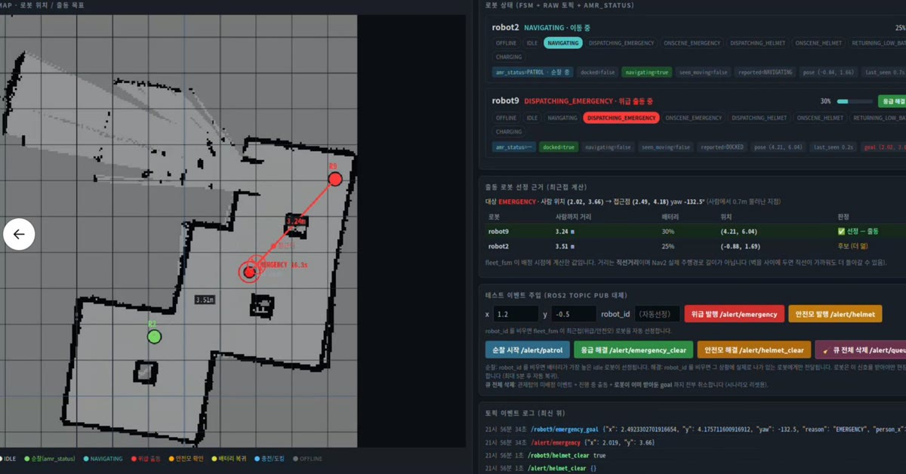
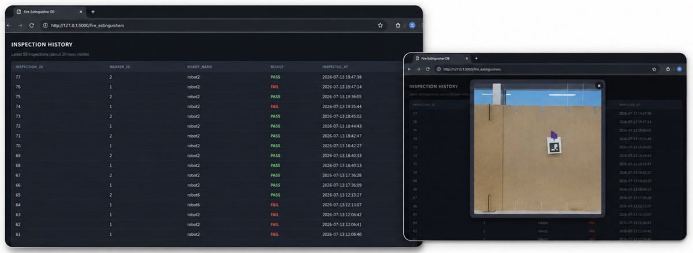
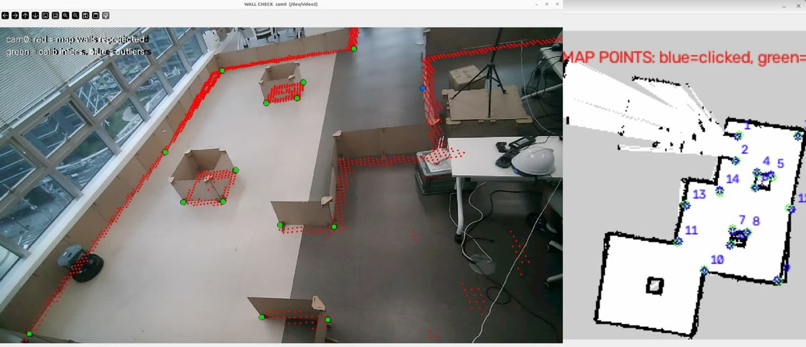
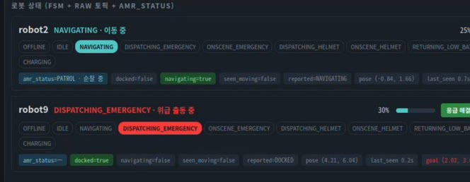

한눈에 보기
- 제조 현장에서 안전사고의 발견과 초동 대응이 늦어지는 문제를 줄이려고, 천장 카메라가 쓰러짐·안전모 미착용을 감지하면 가장 가까운 이동로봇이 출동하는 순찰·관제 시스템을 목표로 했습니다.
- 5인 팀의 팀장으로 관제 FSM(로봇별 상태를 관리해 출동을 정하는 로직)과 출동 배정 정책, ROS 2(로봇 프로그램끼리 메시지를 주고받게 하는 미들웨어) 통신을 맡았습니다.
- 26.07.01~26.07.14, 두산로보틱스 ROKEY 부트캠프에서 TurtleBot4 AMR(자율주행 이동로봇) 2대와 천장 웹캠 2대로 진행했습니다.
1분 시연 영상
무엇을 만들었나
천장 카메라와 이동로봇 두 대를 통신으로 묶어, 위험 상황이 생기면 로봇을 보내고 평소에는 순찰하게 하는 공장 안전 시스템입니다.
위험 상황 접수와 가장 가까운 로봇 출동
카메라 감지나 관제 웹 버튼으로 위험 상황이 들어오면, 관제 FSM이 먼저 로봇마다 상태·위치 정보가 들어오는지, 주행 프로그램이 실행 중인지 확인해 출동할 수 없는 로봇을 뺍니다.
저는 남은 로봇 중 사람에게 가장 가까운 로봇에 출동 명령을 보내도록 만들었습니다. 안전모 미착용일 때는 바로 움직일 수 있는 대기 로봇이 있으면 그중 가까운 로봇을 먼저 고릅니다. 쓰러짐(응급)은 안전모 미착용보다 먼저 처리하고, 순찰 중이던 로봇도 순찰을 멈추고 출동합니다.

순찰 중 소화기 표식 점검과 기록
위험 상황이 없을 때 로봇은 정해진 지점을 돌며 순찰합니다. 팀에서는 소화기 지점에 도착했을 때만 로봇 카메라로 ArUco 마커(카메라가 번호를 읽을 수 있게 만든 흑백 사각 표식)를 찾도록 만들었습니다.
찾은 마커 번호로 점검 결과와 사진을 데이터베이스에 남기고, 웹 화면에서 점검 이력을 조회할 수 있게 했습니다. 이 점검 기능과 출동·순찰을 맡은 로봇 실행 프로그램을 하나로 합치는 일은 남은 과제였습니다.

천장 카메라 화면과 로봇 지도 맞추기
카메라가 찾은 사람 위치로 로봇을 보내려면, 영상 속 위치를 로봇이 쓰는 지도 좌표로 바꿔야 합니다. 팀에서는 카메라 화면과 지도에서 같은 지점을 가리키는 점들을 짝지어 호모그래피(영상 평면을 지도 평면으로 옮기는 변환)를 구했습니다.
지도의 벽을 카메라 화면 위에 다시 그려 실제 벽과 겹치는지 눈으로 확인했습니다.

진행 과정
부트캠프가 정한 조건(로봇 간 협업, 감지·AMR 제어, 시스템 모니터) 안에서 팀은 후보 세 개를 두고 논의했습니다. 제가 처음 제안한 공장 화재 감지·순찰 로봇에 팀원의 웹캠 활용 시나리오가 더해져 지금의 주제로 좁혀졌습니다.
저는 관제에서 로봇이 원래 내보내는 표준 토픽(상태 메시지를 주고받는 채널)이 들어오는지를 생존 신호(heartbeat)로 삼아 로봇별 상태를 관리했습니다.

그런데 부트캠프 Wi-Fi에서는 정상 순찰 중인 로봇이 오프라인으로 깜빡였습니다. 저는 신호가 끊긴 뒤 오프라인으로 보기까지 기다리는 시간을 늘렸습니다(늘린 뒤 다시 측정하지는 못했습니다).
Wi-Fi 부하 때문에 중반 이후에는 비전 PC(카메라 영상을 처리하는 PC)와 로봇 PC를 나눠 운용했습니다.
노트북에서 돌리던 위치 추정·Nav2(자율주행 소프트웨어)가 실행 도중 멈추는 문제도 있었습니다. 일정 안에 장비 통신 설정을 바꿔 시험하지 못해, 이 문제는 부트캠프 뒤의 분석 과제로 남겼습니다.
실물 로봇 2대와 천장 웹캠으로 개발했지만, 시나리오 전 과정의 실행 결과나 성능은 기록으로 남기지 못했습니다.
팀에서 일한 방식
역할은 각자의 역량과 흥미를 기준으로 나눴습니다.
- 감지
- 로봇 제어·마커 점검(순찰 중 소화기에 붙인 표식 확인)
- DB(점검 기록 저장)·웹
- 관제와 ROS 2 통신(제 담당)
저는 팀장으로서 각 노드(기능별 실행 프로그램)를 이해하고 FSM으로 잇는 일이 맞다고 보고 관제를 맡았습니다.
강사 평가가 매일같이 잡혀 있어 평가 준비를 위해 수시로 회의했습니다. 평가는 요구사항 발표와, 스프린트(기능별로 나눈 짧은 개발 기간)마다 받는 설계·코드·테스트 리뷰였습니다.
감지 결과와 특정 로봇에 내리는 명령이 섞이지 않도록 토픽을 관찰(사람 위치)·요청(관제 접수)·명령(로봇 이동) 세 단계로 나누는 계약을 팀에서 정했습니다. 로봇 2대를 함께 운용하면서는 팀에서 실행 노드를 띄울 때 로봇 이름을 지정할 수 있게 고쳤습니다.
실기에서 도킹(충전대 복귀) 좌표·대기 시간 같은 값을 바꿀 때마다 노드 실행 설정(launch)을 고쳐야 했습니다. 저는 이 값들을 별도 설정 파일(yaml)로 빼자고 제안했고, 팀은 프로그램을 다시 빌드하지 않고 yaml만 고쳐 가며 실기 시험에 함께 썼습니다.
PC를 나눌 때는 팀에서 로봇 PC 담당에게 실행 절차를 문서로 넘겼습니다.
배운 점
TurtleBot4와 Nav2는 부트캠프 초반 4일간의 실물 미니프로젝트에서 활용법과 하드웨어 구조를 파악한 뒤 예제와 실기로 계속 익혔습니다. 관제 노드는 로봇이 내보내는 표준 토픽을 직접 받아 판단하는 방식으로 짰습니다.
위치 추정·Nav2가 멈추던 문제는 부트캠프가 끝난 뒤 공식 문서와 유사 장애 사례를 대조해 원인 후보를 정리했고, 통신 방식별 비교 실험 계획까지 세웠습니다.
여러 대의 로봇을 묶는 시스템은 통신 구성부터 같은 조건에서 비교해 봐야 한다는 점을 알게 되었습니다.
기술 상세
관제 FSM·통신 분석 펼쳐 보기
로봇 상태 메시지 수신을 heartbeat(연결 유지 확인 신호)로 삼아 로봇별 오프라인·대기·출동·충전 상태를 관리하는 관제 FSM을 구현하고, 위치 정보나 Nav2 필수 노드가 확인되지 않는 로봇은 출동 후보에서 뺐습니다.
부트캠프가 끝난 뒤에는 노드끼리 서로를 찾는 과정(Discovery)·통신 품질 설정(QoS)·Wi-Fi 혼잡 등 원인 후보를 정리하고, 로봇 내부 통신과 외부 통신을 나누는 구성(CycloneDDS + Zenoh, 로봇 프로그램 사이의 통신을 맡는 소프트웨어 조합)을 검토했습니다. 적용과 실측은 하지 않았습니다.
코드 근거
Rokey_intelli1 — 팀 최종 코드(README가 코드 구성과 한계를 설명합니다)